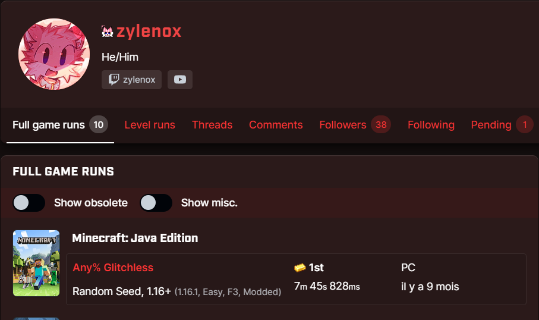

Records
Minecraft : explose par les speedrunners...
Les speedrunners sont des joueurs qui cherchent à finir le jeu le plus rapidement possible, et ils ont trouvé des techniques pour finir le jeu en moins de 10 minutes.
Le World Record actuel, et ce inchangé depuis 9 mois, est de 8 minutes et 1 secondes. Tout ca en arrivant sur un monde généré aléatoirement.
Et pourtant, il existe un outil far dans le domaine du speedrun, dénomé le "TAS" ( Tool-Assisted Speedrun) qui, avec un monde pré-généré, a fini le jeu en 20 petites secondes. Certes cette run, ne pourra jamais être faite pas un humain, mais cela donne un esperance de grande amélioration des World Record